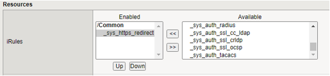

Stappenplan nieuwe website via F5
Inhoudsopgave
1.1 Deployen van nieuwe webserver voor Pool-Template (VM-Ware)
1.6 Deployen van 3 nieuwe webservers voor Pool MP WEB xx (VM-Ware)
1.9 Installeer RMM op elke server en check of de server goed wordt weergegeven in Sentinel One
Inleiding
In dit document vind je een stappenplan/checklist om een nieuwe website via de F5 BIGIP te configureren.
Checlist
Lan-Webservers
Deployen van nieuwe webserver voor Pool-Template (VM-Ware)
Bijwerken Windows Updates
Aanmaken nieuwe website in IIS
(zie handleiding ...)
Installeren juiste .NET software
(zie handleiding ...)Template maken voor webservergroep
Deployen van 3 nieuwe webservers voor Pool MP WEB xx (VM-Ware)
Aanmaken nieuw server certificaat
Aanpassen IIS op elke server
Installeer RMM op elke server en check of de server goed wordt weergegeven in Sentinel One
<!-- -->
F5 BIGIP
Certificaat installeren
Aanmaken HTTP-Profiel
Aanmaken SSL-Server profiel
Aanmaken SSL-Client profiel
Aanmaken Monitor
Aanmaken Nodes
Aanmaken Pools
Aanmaken IRules Datagroup
Aanmaken IRules
Aanmaken Virtual Server
Aanmaken HTTP HTTPS redirect
Sophos
Aanmaken DNS-entry voor de website in het DMZ-WEB-vlan (192.168.201.xx)
Aanmaken interface op de DC-ROU01
Aanmaken netwerkdefenities op de SUM.
Aanmaken NAT-rule op de DC-ROU01
Registreren bij Trans-IP (optioneel: alleen bij extern gebruik op DNS-name)
PRTG
1. LAN-Webservers
1.1 Deployen van nieuwe webserver voor Pool-Template VM-Ware
- Log in op de VM-Ware vSphere console en deploy een nieuwe VM met het template "Windows 2019 Webserver". Kies hiervoor een naam in de trant van "Windows Pool MP Web 30" (dit wordt straks nl. de naam van het template).
1.2 Bijwerken Windows Updates
1.3 Aanmaken nieuwe website in IIS
(zie handleiding ...)
Maak in AD een site-account aan met de naam van de website.
Maak onder E:\WWWRoot een submap aan met de naam van de website.
Disable de inheritance van de rechten (convert to explicit) en zet er de volgende rechten op.
| Account/Groep | Rechten |
|---|---|
| IT | FC |
| site.xxxx | Modify |
| IUSR | Modify |
| Administrators | FC |
| SYSTEM | FC |
Voeg in IIS de nieuwe website toe.
Alleen binding https tenzij http expliciet noodzakelijk is.
Vink "Require Server Name Indication" aan.
Stel bij de application pool bij advanced settings het account waaronder de application pool draait in op het site.xxx - account.
Voeg deze site ook toe op de template-server.
Converteer de template-server naar een virtual server.
Herhaal bovenstaande stappen met als enige uitzondering dat de binding op http kan worden gezet (de template-server heeft geen certificaten).
Converteer de server weer terug naar een template.\
1.4 Installeren juiste .NET software
(zie handleiding ...)
1.5 Template maken voor webservergroep
Maak nu van de geïnstalleerde server weer een VM-Ware template om in de toekomst op eenvoudige wijze een node aan de pool toe te kunnen voegen.
1.6 Deployen van 3 nieuwe webservers voor Pool MP WEB xx (VM-Ware)
1.7 Aanmaken nieuw server certificaat
Maak in de IIS bij servercertificaten een Self-Signed certificate aan. Geef hierbij als Friendly Name de servernaam op.
1.8 Aanpassen IIS op elke server
Nu moet er op elke node nog iets aangepast worden in de IIS settings.
Omdat elke server zijn eigen ip-adres heeft dient dit per website
gecorrigeerd te worden.
Ook moet het in 1.8 aangemaakte certificaat nog gekoppeld worden aan
elke website.
1.9 Installeer RMM op elke server en check of de server goed wordt weergegeven in Sentinel One
Installeer RMM op de server. Deze ligt in de map C:\Install.
F5 - BIGIP
2.1 Certificaat installeren
Onder System \ Certificate Management kunnen SSL-certificaten
geïmporteerd worden.
Bijvoorbeeld Wildcard-Montapacking-nl-2021 en ook de bijbehorende chain
(intermediate en root in een cert-bestand achter elkaar geplakt).

Klik op Import

Selecteer het Import Type (bij een pfx kies je voor PKCS 12, bij een chain kies je voor Certificate).
Vul de naam in,
Selecteer het bestand en type het daarbij behorende wachtwoord in.
Druk hierna op "Import".
2.2 Aanmaken HTTP-profiel
Onder "Local traffic \ Profiles \ Services \ HTTP \" staan de HTTP-profielen.
Per website maken we hier een HTTP-profiel.
Kies in het overzicht voor "create",
Vul de Name in, kies het "Parent Profile" HTTP-Generic.
- Klik onderaan het formulier op "Finished"

2.3 Aanmaken SSL-Server profiel
Onder "Local traffic \ Profiles \ SSL \" staan de SSL-profielen.
Kies hier voor Server om een server-certificaat aan te maken.
- Kies in het overzicht voor "create",

- Vul de Name in, kies het "Parent Profile" en zet de "configuration" op "Advanced",
- Zet het vinkje aan achter "Server Name" en vul de SNI in.
- Klik onderaan het formulier op "Finished"

- Maak nu ook eenzelfde profiel met "-monitor" achter de naam voor de monitor van deze website.
2.4 Aanmaken SSL-Client profiel
Onder "Local traffic \ Profiles \ SSL \" staan de SSL-profielen.
Kies hier voor Client om een client-certificaat aan te maken.
- Kies in het overzicht voor "create",

- Vul de Name in en kies het Parent Profile (Dit is mede afhankelijk van het certificaat wat je wilt gebruiken).

- Klik onderaan het formulier op "Finished"

2.5 Aanmaken Monitor
Per website dient er een monitor aangemaakt te worden op https.
Hier wordt een get-commando verzonden naar de website.
Ook dienen we het serverssl-profiel uit 2.2 hier weer in te stellen.
Op die manier wordt er gecontroleerd op de SNI op de webserver
Ga naar "Local traffic \ Monitors"
Klik in het overzicht op "create"

- Vul de Name. Description in en kies bij "Type" voor HTTPS,
- Vul bij "Send string" het juiste GET-commando in
In dit voorbeeld is het GET / HTTP/1.1\r\nHost:finance.monta.nl\r\nConnection:Close\r\n\r\n
- Vul bij "Recieve String" het antwoord in waarop gecontroleerd moet worden.
In dit voorbeeld is dat HTTP/1.1 200 OK
- Selecteer bij SSL Profile het juiste serverssl-profiel
- Selecteer bij "Alias Service Port" HTTPS

Klik onderaan het formulier op "Finished"

2.6 Aanmaken Nodes
Alle te gebruiken webservers dienen eenmaal aangemaakt te worden als
Node
Hierin geven we het ip-adres op van we lan-webserver.
- Ga naar "Local traffic \ Nodes \ Node List ",

2.7 Aanmaken Pools
Om Blue-Green in te richten hebben we voor elke website 2 pools nodig.
Ga naar "Local traffic \ Pools \ Pool List ",
Klik in het overzicht op "create"

- Vul de Name en Description in en selecteer de juiste "Health Monitor"
- Vul bij "Load Balancing Method" Ratio (Member) in.
- Klik nu bij "New Members" op de radio-button "Node List" en selecteer hier de eerste Node voor deze pool (in dit voorbeeld is dat de MP-WEB300).
Kies bij "Service Port" voor HTTPS.
Klik hier op "ADD".
Doe dit ook voor de andere webservers in deze pool (in dit voorbeeld is dat de MP-WEB302)
Het resultaat ziet er dan zo uit.
De Pool voor Blue is nu klaar.
Klik onderaan het formulier op "Repeat" om een zelfde pool aan te maken voor Green

Geef als Name nu een Green-variant op.
Selecteer bij "Health Monitor" nu "HTTPS-443" (of als die niet werkt "Gateway-ICMP"). Hierdoor kunnen de ontwikkelaars op de green-machine altijd zien wat er fout is in de website.
De "Load Balancing Method mag voor Green op "Round Robbin" blijven staan.
Klik nu bij "New Members" op de radio-button "Node List" en selecteer hier de eerste Node voor deze pool (in dit voorbeeld is dat de MP-WEB301).
Klik daarna op "Finished"

2.8 Aanmaken IRules Datagroup
Om de IRules te kunnen gebruiken hebben we eerst een datagroep voor
Green nodig.
Deze maken we als volgt aan.
Ga naar "Local traffic \ iRules \ Data Group List ",
Klik in het overzicht op "create"

- Vul de Name in en selecteer bij "Type" Address
- Vul bij "Records" de gegevens van de mp-dosp02.montapacking.nl in.
Klik hierna op "Add". Dit ziet er dan als volgt uit.
- Klik daarna op "Finished"

2.9 Aanmaken iRules
Nu kunnen we met de in 2.7 aangemaakte Data Group een iRule aanmaken.
Ga naar "Local traffic \ iRules \ iRule List",
Klik in het overzicht op "create"

- Geef onderstaande expressie in, in het veld "Definition", en verander de namen van de Data Group en de Pool.
De expressie is:
when CLIENT_ACCEPTED {
if { [class match [IP::client_addr] equals DG-Pool-Finance-Green] } {
pool Pool-Finance.monta.nl-Green
}
}
- Klik daarna op "Finished"

2.10 Aanmaken Virtual Server
Ga naar "Local traffic \ Virtual Servers \ Virtual Server List ",
Klik in het overzicht op "create"

- Vul de Name in geef bij "Destination Address /Mask" het ip-adres op waarop de F5 moet luisteren in het DMZ-WEB-vlan,
Selecteer bij "Service Port" HTTPS en zet de configuration op Advanced.
Selecteer bij "Protocol Profle (client)" de tcp-mobile-optimized en bij "HTTP Profile (Client)" het gewenste profiel.
- Selecteer bij "SSL Profile (Client)"het gewenste client-profiel van de website. En selecteer bij "SSL Profile (Server) het gewenste sslserver profiel.

- Selecteer bij "VLAN and Tunnel Traffic" Enabled on, en selecteer bij de VLAN's DMZ-WEB

Zet de "Source Address Translation" op Auto Map.
Selecteer onder het kopje "Resources" bij IRules de gewenste iRule.
En bij Default Pool de gewenste pool
- Klik daarna op "Finished"

Aanmaken HTTP HTTPS redirect
Op een Virtual Server kunnen we ook een http -> https rewrite
aanmaken.
Dit doen we als volgt
Ga naar "Local traffic \ Virtual Servers \ Virtual Server List ",
Klik in het overzicht op "create"

- Vul de Name in geef bij "Destination Address /Mask" het ip-adres op waarop de F5 moet luisteren in het DMZ-WEB-vlan,

Selecteer bij "Service Port" HTTP en zet de configuration op Advanced.
Selecteer bij "Protocol Profile (client)" de tcp-mobile-optimized en bij "HTTP Profile (Client)" http-redirect
- Selecteer bij "VLAN and Tunnel Traffic" Enabled on, en selecteer bij de VLAN's DMZ-WEB
Zet de "Source Address Translation" op Auto Map.
Selecteer hierna bij iRules de _sys_https_redirect rule.

- Klik daarna op "Finished"

Sophos
3.1 DNS- en netwerk-definities aanmaken
Om de websites benaderbaar te maken moeten er DNS- en netwerk-definities aangemaakt worden. Hierbij dient onderscheid gemaakt te worden tussen websites die ook vanaf internet voor klanten/consumenten benaderbaar moeten zijn en websites die alleen voor vestigingen nodig zijn. Zie onderstaande afbeelding.
Op de F5 staan alle websites in DMZ-WEB, maar omdat er voor de vestigingen een VPN-DMZ gemaakt is kunnen ze net als de servers in het DC LAN van de interne DNS-definitie gebruik maken. Voor websites die van buitenaf bereikbaar moeten er een extern IP-nr uitgetrokken worden wat bij TransIP wordt geregistreerd. Daarnaast moet er voor de DC-ROU01 een netwerk-definitie aangemaakt worden die gebruikt kan worden in een NAT-rule. Zie onderstaand voorbeeld.
| Definitie | Klant/cons vestiging | Interne DNS | TransIP | Lokale Firewalls | DC-ROU01 |
|---|---|---|---|---|---|
| api.monta.nl | Klant/cons | 192.168.201.38 | 193.53.249.25 | Geen definitie | 193.53.249.25 |
| finance.monta.nl | Vestiging | 192.168.201.62 | Niet | Geen definitie | Niet |
3.1.1 Stappenplan website van buitenaf bereikbaar
Registreer in de interne DNS het DMZ-adres van de Virtuele server van de website.
Reserveer in de IP-lijst op het tabblad "NorthC | ExternIP" een extern IP-nr voor de website.
Maak op de DC-ROU01 bij "Interfaces \ Additional addresses" een nieuwe interface aan voor het nieuwe IP-nr (clone een bestaande).
Maak op de SUM een netwerkdefinitie met bij als naam "DNS_VS-api.monta.nl" met het DMZ-WEB IP-nr aan en deploy deze alleen naar de dc-rou01.
Maak op de dc-rou01 een NAT-rule aan voor het nieuwe externe IP-nr en stel deze als "Any via HTTPS naar DNS-VS-api.monta.nl".
Registreer bij TransIP het nieuwe IP-nr.
3.1.2 Stappenplan website alleen vanaf vestigingen bereikbaar
Registreer in de interne DNS het DMZ-adres van de Virtuele server van de website.
Er zijn verder geen acties nodig omdat zowel de vestigingen als de servers in het DC LAN de interne DNS-definitie gebruiken en daarmee bijvoorbeeld “addressvalidation.monta.nl” vinden op ip-nr 192.168.201.80